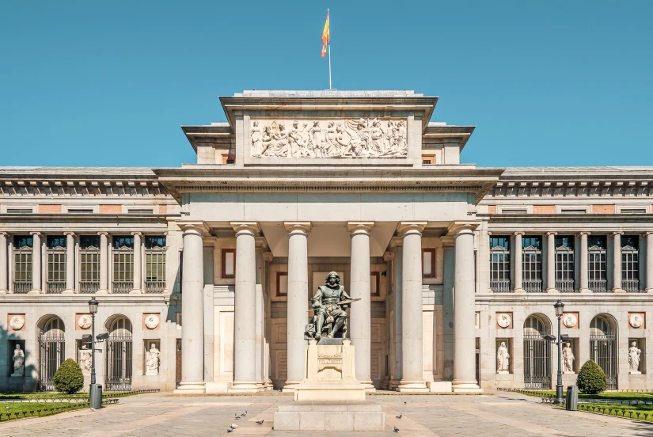
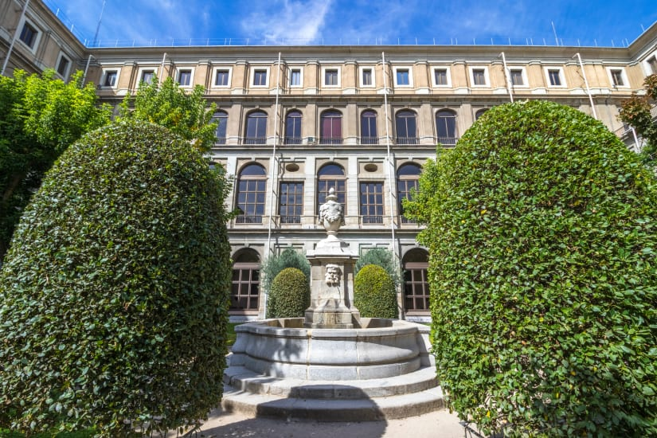

Museo Thyssen-Bornemisza
Sul Paseo del Prado sono distribuiti i tre musei di Madrid più famosi. Iniziamo dal Museo Thyssen-Bornemisza, ospitato nel palazzo di Villahermosa e custode di circa ottocento opere che vanno dal Rinascimento italiano all’arte moderna. La collezione principale ospitata nel museo fa parte della raccolta della famiglia del magnate dell’acciaio tedesco-ungherese Thyssen-Bornemisza e dal 1993 è diventata di proprietà statale. La sua storia è affascinante e ci racconta di viaggi, contese e di un barone che non voleva ricavare profitto ma mantenere unita la propria raccolta di pezzi d’arte d’inestimabile valore culturale. E di fronte a Villahermosa si può osservare la Fontana di Apollo, risalente al 1803 (anche conosciuta come la Fontana delle Quattro Stagioni): una delle fontane e dei monumenti di Madrid più belli, insieme alle Fontane Cibele e Nettuno.
Museo del Prado
Il Museo del Prado è uno dei musei più importanti del mondo intero – dichiarato Patrimonio dell’Umanità UNESCO nel 2021 – e raccoglie opere di importanti artisti italiani, spagnoli e fiamminghi. Per elencarne giusto alcuni, qui troviamo opere del Mantegna, di Raffaello, Van der Weyden, Paul Rubens, Tiziano, Caravaggio, Rembrandt, Goya e Velasquez. Di quest’ultimo si può ammirare, proprio all’esterno del museo, un altro dei più conosciuti monumenti di Madrid: la statua eretta in suo onore e memoria. E ogni giorno nelle ultime due ore d’apertura si entra gratis (anche se due ore non sono di certo sufficienti per godere come si deve di tutto ciò che il Prado offre).
Museo Reina Sofia
Con il Museo Reina Sofia, fondato dai Reali di Spagna, completiamo il Triangolo d’oro dell’arte di Madrid, composto appunto dai tre musei appena citati. In questo museo sono raccolte opere d’arte moderna e contemporanea del XX secolo. Il Reina Sofia ha sede nel settecentesco Ospedale Generale della città, che è stato restaurato e riprogettato per ottenere un ambiente adatto all’esposizione delle opere d’arte e offrire l’esperienza museale odierna. Ti chiedi quali opere d’arte? Te ne vogliamo nominare una in particolare, che da sola vale il prezzo del biglietto d’ingresso: Guernica, l’opera più conosciuta di Picasso è custodita proprio qui. A farle compagnia ci sono numerosi dipinti di molti altri autori di fama mondiale, tra cui Dalì, Mirò, Kandinsky, Magritte, Rothko, Francis Bacon, Lucio Fontana e diversi artisti che hanno fatto la storia dell’arte – e in un certo modo dell’umanità.
